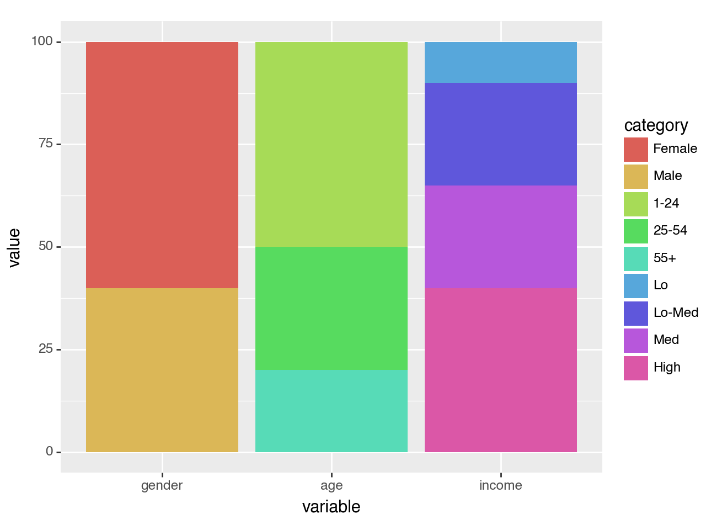
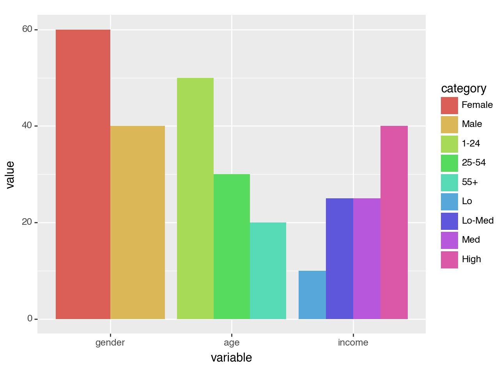
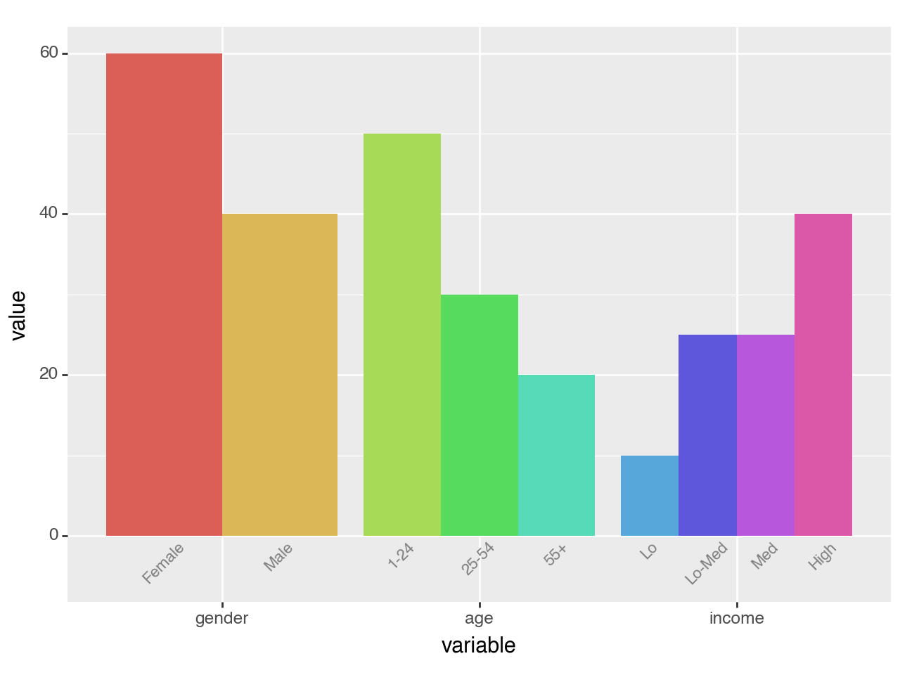
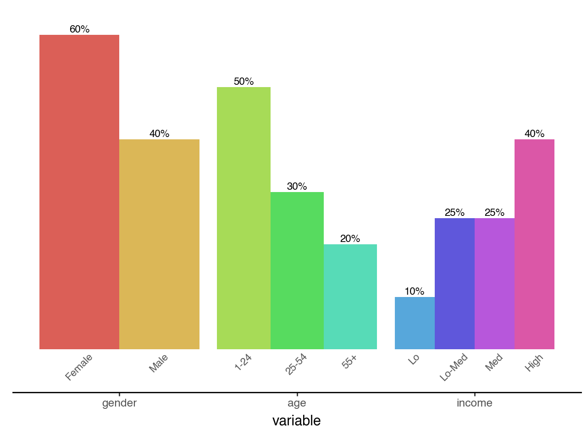

import pandas as pd
import numpy as np
from plotnine import (
ggplot,
aes,
geom_col,
geom_text,
position_dodge,
lims,
theme,
element_text,
element_blank,
element_rect,
element_line,
)Two Variable Bar Plot
Visualising on a single plot the values of a variable that has nested (and independent) variables
Create the data
df = pd.DataFrame({
'variable': ['gender', 'gender', 'age', 'age', 'age', 'income', 'income', 'income', 'income'],
'category': ['Female', 'Male', '1-24', '25-54', '55+', 'Lo', 'Lo-Med', 'Med', 'High'],
'value': [60, 40, 50, 30, 20, 10, 25, 25, 40],
})
df['variable'] = pd.Categorical(df['variable'], categories=['gender', 'age', 'income'])
df['category'] = pd.Categorical(df['category'], categories=df['category'])
df| variable | category | value | |
|---|---|---|---|
| 0 | gender | Female | 60 |
| 1 | gender | Male | 40 |
| 2 | age | 1-24 | 50 |
| 3 | age | 25-54 | 30 |
| 4 | age | 55+ | 20 |
| 5 | income | Lo | 10 |
| 6 | income | Lo-Med | 25 |
| 7 | income | Med | 25 |
| 8 | income | High | 40 |
We want to visualise this data and at a galance get an idea to how the value breaks down along the categorys for the different variable. Note that each variable has different categorys.
First we make a simple plot with all this information and see what to draw from it.
(ggplot(df, aes(x='variable', y='value', fill='category'))
+ geom_col()
)
<Figure Size: (640 x 480)>All the values along each variable add up to 100, but stacked together the difference within and without the groups is not clear. The solution is to dodge the bars.
(ggplot(df, aes(x='variable', y='value', fill='category'))
+ geom_col(stat='identity', position='dodge')) # modified
<Figure Size: (640 x 480)>This is good, it gives us the plot we want but the legend is not great. Each variable has a different set of categorys, but the legend has them all clamped together. We cannot easily change the legend, but we can replicate it’s purpose by labelling the individual bars.
To do this, we create a geom_text with position_dodge(width=0.9) to match the ratio of the space taken up by each variable. If there was no spacing between the bars of different variables, we would have width=1.
A minor quack, when text extends beyond the limits we have to manually make space or it would get clipped. Therefore we adjust the bottom y limits.
dodge_text = position_dodge(width=0.9) # new
(ggplot(df, aes(x='variable', y='value', fill='category'))
+ geom_col(stat='identity', position='dodge', show_legend=False) # modified
+ geom_text(aes(y=-.5, label='category'), # new
position=dodge_text,
color='gray', size=8, angle=45, va='top')
+ lims(y=(-5, 60)) # new
)
<Figure Size: (640 x 480)>Would it look too crowded if we add value labels on top of the bars?
dodge_text = position_dodge(width=0.9)
(ggplot(df, aes(x='variable', y='value', fill='category'))
+ geom_col(stat='identity', position='dodge', show_legend=False)
+ geom_text(aes(y=-.5, label='category'),
position=dodge_text,
color='gray', size=8, angle=45, va='top')
+ geom_text(aes(label='value'), # new
position=dodge_text,
size=8, va='bottom', format_string='{}%')
+ lims(y=(-5, 60))
)<Figure Size: (640 x 480)>That looks okay. The values line up with the categorys because we used the same dodge parameters. For the final polish, we remove the y-axis, clear out the panel and make the variable and category labels have the same color.
dodge_text = position_dodge(width=0.9)
ccolor = '#555555'
# Gallery Plot
(ggplot(df, aes(x='variable', y='value', fill='category'))
+ geom_col(stat='identity', position='dodge', show_legend=False)
+ geom_text(aes(y=-.5, label='category'),
position=dodge_text,
color=ccolor, size=8, angle=45, va='top') # modified
+ geom_text(aes(label='value'),
position=dodge_text,
size=8, va='bottom', format_string='{}%')
+ lims(y=(-5, 60))
+ theme(panel_background=element_rect(fill='white'), # new
axis_title_y=element_blank(),
axis_line_x=element_line(color='black'),
axis_line_y=element_blank(),
axis_text_y=element_blank(),
axis_text_x=element_text(color=ccolor),
axis_ticks_major_y=element_blank(),
panel_grid=element_blank(),
panel_border=element_blank())
)
<Figure Size: (640 x 480)>Credit: I saved a plot this example is based on a while ago and forgot/misplaced the link to the source. The user considered it a minor coup.